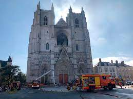
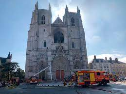
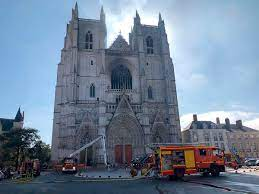

France is one of Europe's largest countries. It is bordered by
six countries other nations: Germany, Belgium and Luxembourg to the northeast,
Switzerland and Italy to the southeast and Spain to the southwest.
The United Kingdom borders France via the English Channel.
have you visited france ever?
la marseillaise - french national anthem
la culture de france
1. les vetements francais
Fashion in France is an important subject in the culture and country's social life, as well, being an important
part of its economy.Fashion design and production became prominent in France since 15th century. During the 17th
fashion exploded into a rich industry, for exportation and local consumption, the Royal Minister of Finances,
Jean-Baptiste Colbert, says Fashion is to France what the gold mines of Peru are to Spain...". In the 19th century,
ade a transition into specialisation for modern term haute couture, originated in the 1860s, bringing good taste
to fashion argot. The term prêt-à-porter was born in the 1960s, reacting against the traditional notions of fashion
and garment-making process, satisfying the needs of pop culture and mass media.
Paris acts as the center of the fashion industry and holds the name of global fashion capital. The city is home to
many prime designers, including Chanel, Louis Vuitton, Givenchy, Balmain, Christian Louboutin, Pierre Cardin, Yves Saint
Laurent, Roger Vivier, Thierry Mugler, Christian Dior, Jean Paul Gaultier, Hermès, Lanvin, Chloé, Rochas, and Céline.
2. La cuisine française
La cuisine française fait référence à divers styles gastronomiques dérivés de la tradition française.
Elle a évolué au cours des siècles, suivant ainsi les changements sociaux et politiques du pays.
Le Moyen Âge a vu le développement de somptueux banquets qui ont porté la gastronomie française
à un niveau supérieur, avec une nourriture décorée et fortement assaisonnée par des chefs tel
Guillaume Tirel.
aimez-vous la cuisine francaise?
ever tasted french food?
3. les eglises francais
The places of worship in Paris are some of its most popular attractions. From the famous
Notre-Dame on the Île de la Cité and the Grande Mosque de Paris, to the lesser-known gems tucked away in unsuspecting
places like The Saint Jean Baptiste Church of Belleville, the range of religious architecture in this cosmopolitan
city is sublime.

LA NOTE DAME
Notre-Dame de Paris (French: [nɔtʁə dam də paʁi] (About this soundlisten);
meaning "Our Lady of Paris"), referred to simply as Notre-Dame is a medieval Catholic cathedral on
the Île de la Cité in the 4th arrondissement of Paris. The cathedral was consecrated to the Virgin Mary and
considered to be one of the finest examples of French Gothic architecture. Its pioneering use of the rib vault
and flying buttress, its enormous and colourful rose windows, as well as the naturalism and abundance of its
sculptural decoration set it apart from the earlier Romanesque style. Major components that make Notre Dame
stand out include its large historic organ and its immense church bells.
The cathedral's construction began in 1163 under Bishop Maurice de Sully and was largely complete by 1260,
though it was modified frequently in the following centuries. In the 1790s, Notre-Dame suffered desecration
during the French Revolution; much of its religious imagery was damaged or destroyed. In the 19th century, the
cathedral was the site of the coronation of Napoleon I and the funerals of many presidents of the French
Republic.
Popular interest in the cathedral blossomed soon after the 1831 publication of Victor Hugo's
novel Notre-Dame de Paris (better known in English as The Hunchback of Notre-Dame). This led to a major
restoration project between 1844 and 1864, supervised by Eugène Viollet-le-Duc. The Allied liberation of Paris
in 1944 was celebrated within Notre-Dame with the singing of the Magnificat. Beginning in 1963, the cathedral's
was cleaned of centuries of soot and grime. Another cleaning and restoration project was carried out between 1991
and 2000.
what are your views about notre dame?
les fromages francais
En France, les producteurs fermiers, les artisans et les industriels fabriquent, au début
du xxie siècle, plus d'un millier de variétés de fromages1. En 2015, le Centre national interprofessionnel de
l'économie laitière en répertorie 1 200 et le Guide 2015 des fromages au lait cru publié par le magazine
Profession fromager, pas moins de 1 800 produits classés par région et par grande famille technologique2. Cette
versatilité s'explique par les très nombreuses variations dans l’espace et dans le temps que connaissent les
fromages « fermiers » mais aussi d’un producteur à l’autre, et par des produits relevant d’une même recette
mais qui peuvent être commercialisés sous des noms différents au sein des fromages industriels.
la tour eiffel
The Eiffel Tower (/ˈaɪfəl/ EYE-fəl; French: tour Eiffel [tuʁ‿ɛfɛl] (About this soundlisten)) is a wrought-iron
lattice tower on the Champ de Mars in Paris, France. It is named after the engineer Gustave Eiffel, whose company
designed and built the tower.
Locally nicknamed "La dame de fer" (French for "Iron Lady"), it was constructed from 1887 to 1889 as the entrance to the
1889 World's Fair and was initially criticised by some of France's leading artists and intellectuals for its design, but
it has become a global cultural icon of France and one of the most recognisable structures in the world.[3]
The Eiffel Tower is the most-visited paid monument in the world; 6.91 million people ascended it in 2015.
The tower is 324 metres (1,063 ft) tall, about the same height as an 81-storey building, and the tallest structure
in Paris. Its base is square, measuring 125 metres (410 ft) on each side. During its construction, the Eiffel Tower
surpassed the Washington Monument to become the tallest man-made structure in the world, a title it held for 41 years
until the Chrysler Building in New York City was finished in 1930. It was the first structure in the world to surpass
both the 200 meter and 300 meter mark in height. Due to the addition of a broadcasting aerial at the top of the tower
in 1957, it is now taller than the Chrysler Building by 5.2 metres (17 ft). Excluding transmitters, the Eiffel Tower
is the second tallest free-standing structure in France after the Millau Viaduct.


.jpg) 
